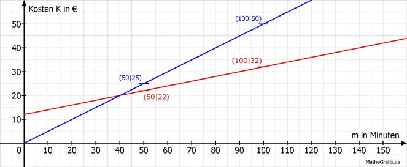

Lineare Funktionen Aufgabe 41 Es stehen 2 Handytarife zur Auswahl. Tarif 1: Grundgebühr 12 € und 20 Cent pro Minute Tarif 2: 50 Cent pro Minute a)Tragen Sie die fehlenden Werte in die Tabellen ein. (m = Minuten, K = Kosten in €) b) Wie viel kosten 150 min in Tarif 1? c) Ein Kunde muss in Tarif 2 45 € bezahlen. Wie viel Minuten hat er telefoniert? a) Die Funktionsgleichungen für die Abhängigkeit der Kosten K von den telefonierten Minuten m lauten: 20 Cent/Minute = 0,20 €/Minute Tarif 1: K1 = 0,20 * m + 12 50 Cent/Minute = 0,50 €/minute Tarif 2: K2 = 0,05 * m Tarif 1: m 50 100 K 22 32 K(50) = 020 * 50 + 12 = 22 K(100) = 0,20 * 100 + 12 = 32 Tarif 2: m 50 100 K 25 50 K(50) = 0,50 * 50 = 25 K(100) = 0,50 * 100 = 50  b) m = 150 K(150) = 0,20 * 150 + 12 = 42 € c) K = 45 45 = 0,50 * m | :0,50 m = 90 Minuten